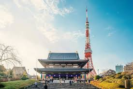
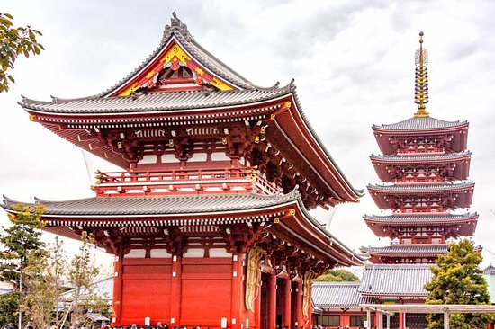
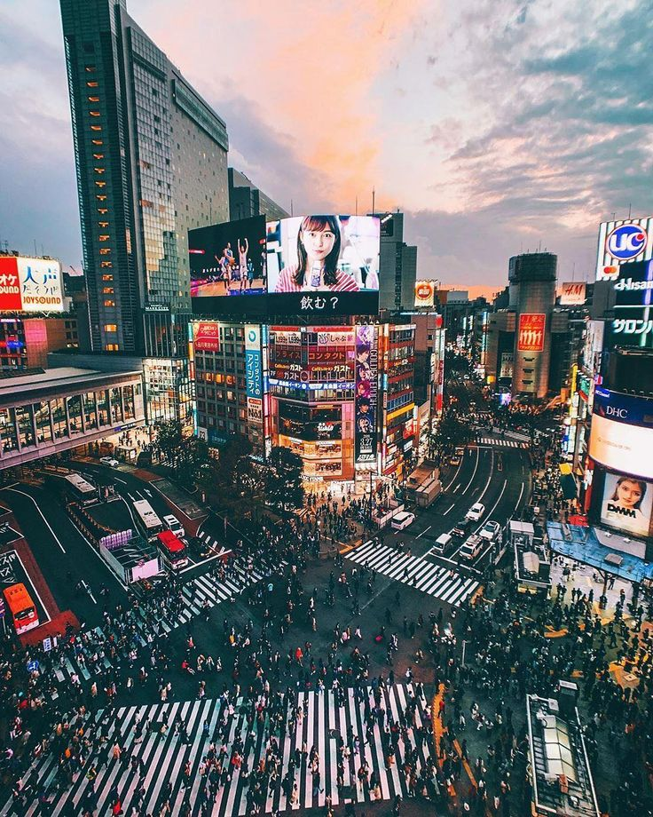
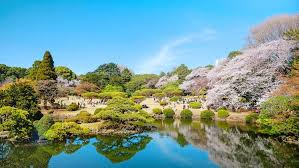

Get ready to explore Tokyo, a vibrant city blending traditional culture with cutting-edge modernity. Visit historic temples, experience futuristic technology, and enjoy delicious Japanese cuisine in one of the world’s most dynamic cities.
More Photos from Tokyo

Tokyo Tower
Iconic symbol of Tokyo with panoramic city views.

Senso-ji Temple
The oldest and most famous temple in Tokyo.

Shibuya Crossing
Famous busy intersection, a symbol of Tokyo’s energy.

Shinjuku Gyoen
Beautiful park offering peace and natural beauty.
Itinerary Suggestions
- Visit the Tokyo Tower and enjoy panoramic views
- Explore the historic Senso-ji Temple in Asakusa
- Experience the energy of Shibuya Crossing
- Stroll through Shinjuku Gyoen National Garden
- Indulge in fresh sushi at Tsukiji Fish Market